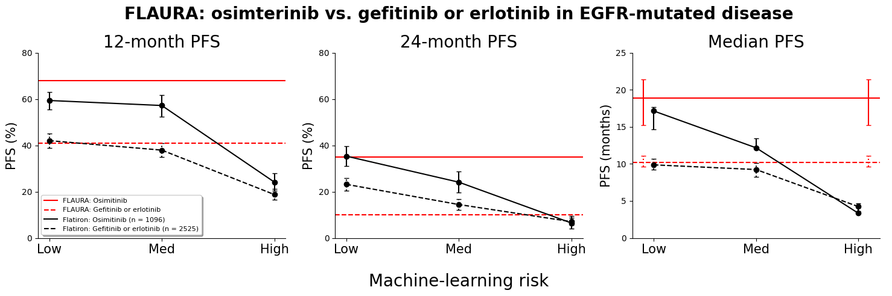

Risk level is {{ flaura_risk }} when compared to patients in routine practice with EGFR mutation-positive disease who went on to receive first-line osimertinib or standard EGFR-TKI. {{form_data}}
Progression fress survival (PFS) estimates for {{ flaura_risk }} risk patients in routine practice:
{% if flaura_risk == "LOW" %}


Comparing PFS estimates in routine practice to patients in the FLAURA trial:
